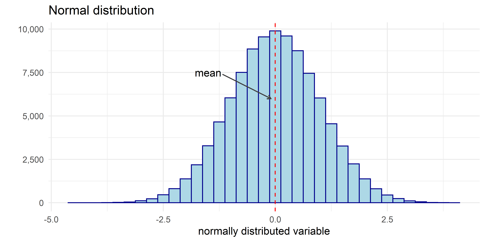
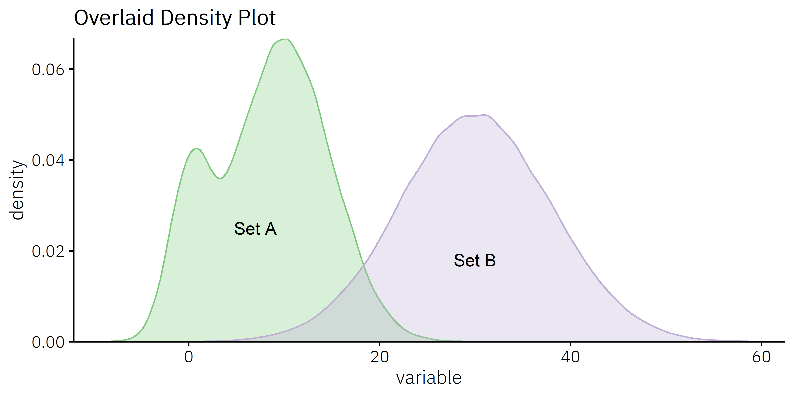

Chapter 2 Distributions
2.1 histogram
# generate a random normally distributed variable
normal <- tibble(variable = rnorm(100000, 0, 1))
# histogram plot
# ggplot is the first command for any ggplot2 plot. data and aestetics aes()
# can be defined here or in any individual geom_*(function). Histograms only
# take "x" argument unless normalizing
ggplot(data = normal, aes(x = variable)) +
# geom_histogram draws a histogram
# fill and color can also be used in the aes() command to map them to data
geom_histogram(binwidth = 0.25, fill = "lightblue", color = "darkblue") +
# add a vertical line at the computed mean (can be any number), linetype controls
#the styling of the line in this case to dashed.
geom_vline(aes(xintercept = variable %>% mean()), color = "red", linetype = "dashed") +
#the annotate function adds any geom to the plot, here we
# use text to put a label on the graph at specified x and y coords.
annotate("text", x = -1.5, y = 7500, label = "mean") +
# here we use the annotate geom with segment to create an arrow pointing from
# the label to the line
annotate("segment",
x = -1.18,
y = 7400,
xend = -0.1,
yend = 6000,
size = 0.6,
color = "#404040",
arrow = arrow(length = unit(0.15, "cm")),
lineend = "butt",
linejoin = "mitre") +
# themes change the overall look of the plot. these can also be modified
# further if need be (also can use packaged themes like theme_economist)
theme_minimal() +
# basic title and lables can be done with xlab ylab and ggtitle
ggtitle("Normal distribution") +
xlab("normally distributed variable") +
# more options are availble in the scale*() functions like labels
# function which can be used to put commas, percentages, etc from the
# scales::label() function
scale_y_continuous(name = "",
labels = comma)

Figure 2.1: Histogram of a normally distributed variable
2.2 Density plot (overlaying distributions)
# create a bimodal distribution
plot1 <-
tibble(variable = rnorm(100000, 10, 5)) %>%
bind_rows(tibble(variable = rnorm(20000, 0, 2))) %>%
mutate(set = "set A")
# second non-overlapping distribution
plot2 <-
tibble(variable = rnorm(100000, 30, 8)) %>%
mutate(set = "set B")
# density plot
# append the two plots together and pipe them into the plot
bind_rows(plot1, plot2) %>%
# ggplot is the first command for any ggplot2 plot. data and aestetics aes()
# can be defined here or in any individual geom_*(function). Density plots
# only take x variables
ggplot(aes(x = variable)) +
# we set both fill and color to the grouping variable to create two density
# plots that overlay each other. Alpha controls the transparency of the plot
# in this case letting us see both distributions.
geom_density(aes(fill = set, color = set), alpha = 0.3) +
# plot colors, need to set both fill and color because this plot uses both.
# if we only set one color the other would default to ggplot2 pallete.
scale_fill_brewer(type = "qual", palette = "Accent") +
scale_color_brewer(type = "qual", palette = "Accent")+
# its often better to directly label the plot instead of relying on a
# legend. The annotate function adds any geom to the plot, here we
# use text to put labels on the graph at specified x and y coords.
annotate("text", x = 7, y = 0.025, label = "Set A") +
annotate("text", x = 30, y = 0.018, label = "Set B") +
# theme_cowplot comes from the cowplot package. In this theme function
# font family and font size can be adjusted using arguments
theme_cowplot(font_family = "IBM Plex Sans Light", font_size = 12) +
# Because the plot is directly labeled, we dont need a legend. Theme
# objects can be modified with the theme() funtion
theme(legend.position = "none") +
# By default R leaves space between the axis and the data visualization.
# by setting scale_y_continuous() expand to zero, we can eliminate this.
# Breaks can be set manually, howeer, the pretty_breaks() can make nice
# even breaks easily.
scale_y_continuous(expand = c(0, 0)) +
scale_x_continuous(expand = c(0, 0),
breaks = pretty_breaks(5)) +
# basic title and axis lables can be done with xlab ylab and ggtitle
ggtitle("Overlaid Density Plot")

Figure 2.2: Overlaid density plot of two distributions